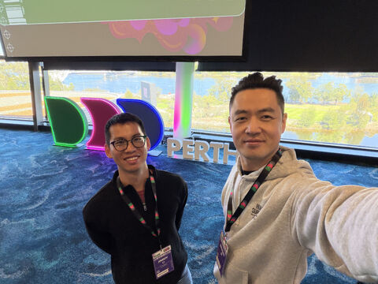
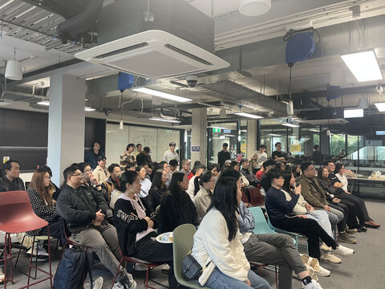
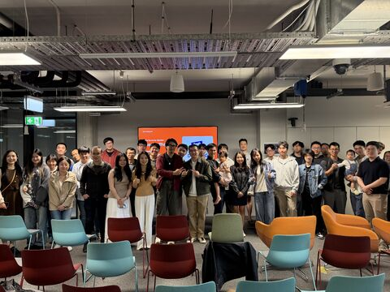
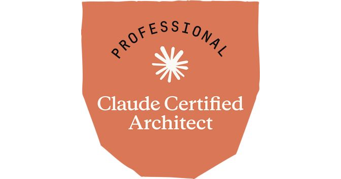
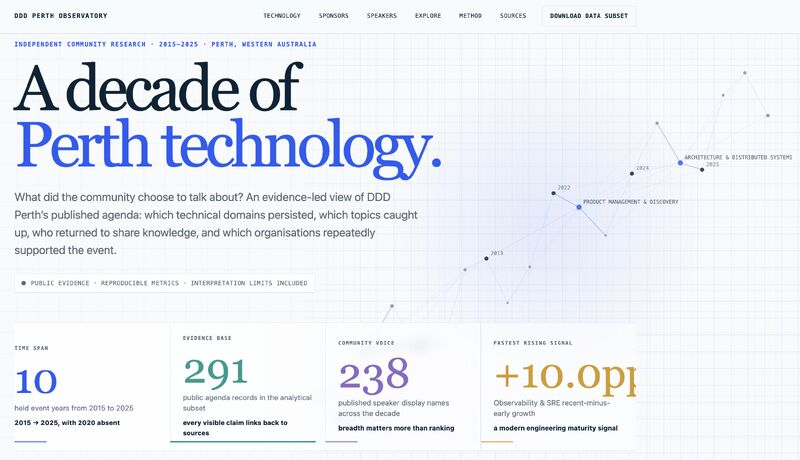
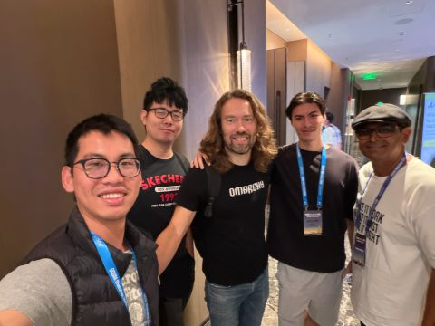
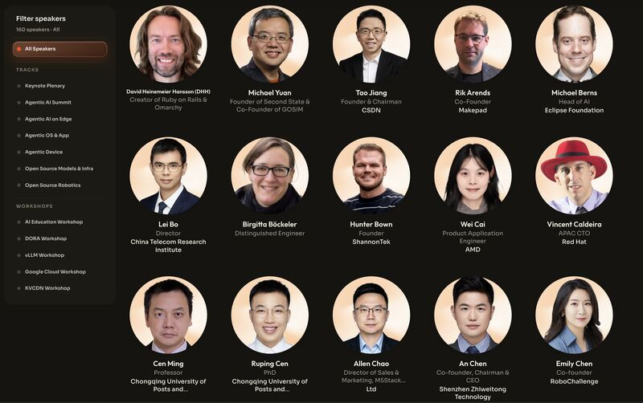
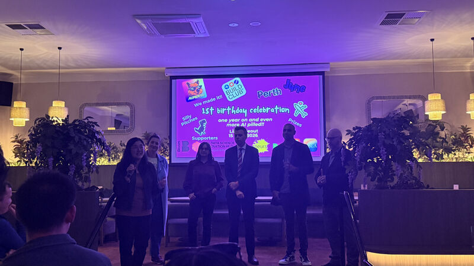
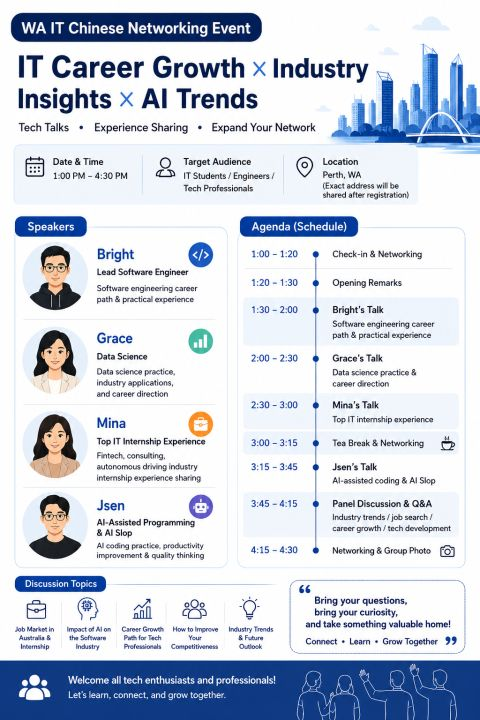
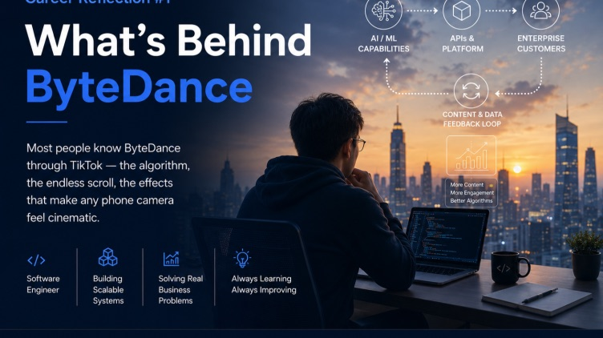

Ten posts I've pinned to my LinkedIn profile, with photos. Click one to open it on LinkedIn.
Follow me on LinkedIn ↗ in/jimmyli96
Define “done”, break it down, give the agent context, keep a human in the loop, all to order dinner for 20.
♥ 101LinkedIn ↗
A meetup at UWA Industry Hub with people who have worked across Australia, China, Taiwan, the US, the UK and Germany.
♥ 84LinkedIn ↗
A people-skills workshop, and the story of building an app from idea to launch.
♥ 70LinkedIn ↗
I took Anthropic’s CCAR-P certification as soon as it was announced.
♥ 63LinkedIn ↗
10 years, 291 agenda items and 238 speakers from DDD Perth, analysed with help from AI.
♥ 61LinkedIn ↗
DHH on Omarchy, plus a conversation with OpenCV’s CEO about the future of agent software.
♥ 50LinkedIn ↗
My must-see list for Shenzhen: robotics, AI glasses, vLLM and harness engineering.
♥ 29LinkedIn ↗
Our “silly pitch”: personal AI agents that talk on your behalf, built on agent-to-agent (A2A) infrastructure.
♥ 60LinkedIn ↗
Career growth in software engineering, and an afternoon of good discussion.
♥ 60LinkedIn ↗
What I learned from catching up with a principal engineer at Atlassian.
♥ 43LinkedIn ↗